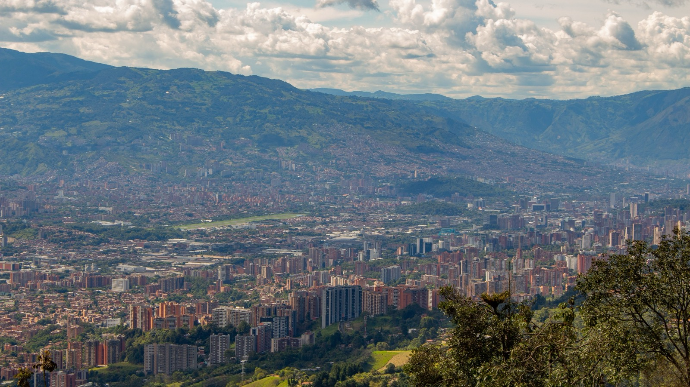
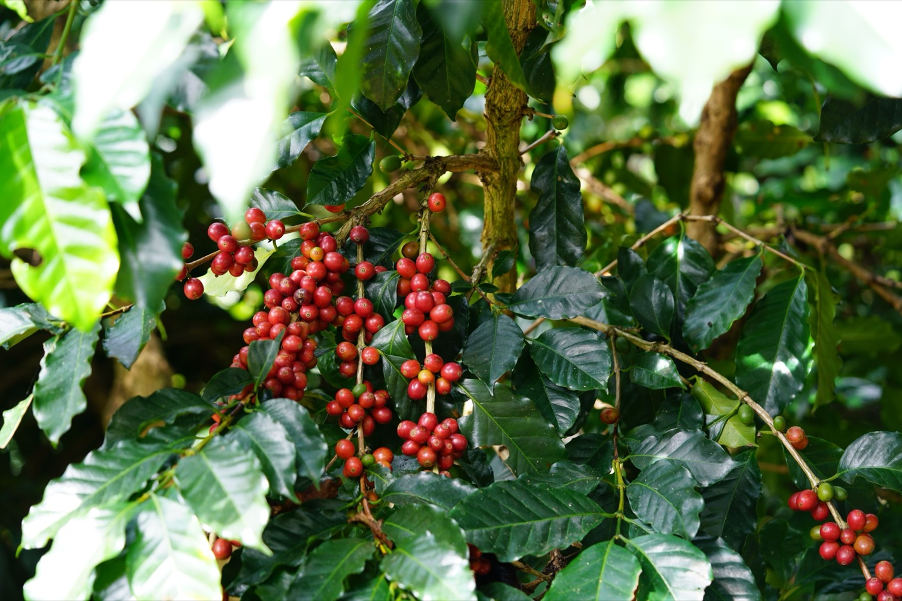
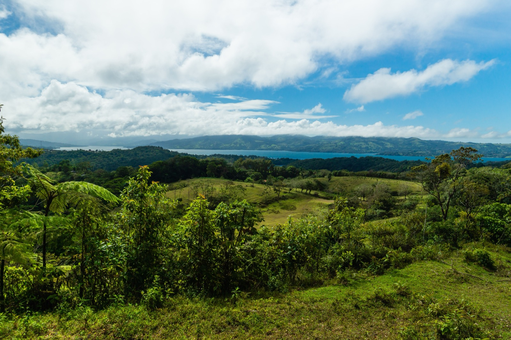

Cities of Eternal Spring
Somewhere in the tropics, it is 72°F and sunny today. It was 72°F last January, and it will be 72°F next July. These are the cities of eternal spring: high-altitude towns near the equator where the weather simply forgets to change. Here is where they are, why they exist, and which one might actually fit you.
At a glance: what eternal spring is, and where
- The recipe: high elevation plus tropical latitude. Altitude cancels the heat, the equator cancels the seasons. The result is mild weather in every month.
- The sweet spot: roughly 1,200 to 2,000 m for warm t-shirt days, 2,000 to 2,800 m for cooler sweater weather.
- The classics: Medellin, Cuernavaca (the original), Boquete, Antigua, Quito, Cuenca, Cochabamba, and Costa Rica's Central Valley.
- The catch: many of them have a long rainy season, and the highest ones sit above 2,500 m, where the air is thin.
If you have ever wondered why Medellin gets called the city of eternal spring while a beach town two hours away is a sweatbox, the answer is not magic. It is a mountain. A short flight from the equator, at the right height, the weather settles into a groove and stays there for the rest of your life. Once you understand the recipe, you can spot these places on a map before you ever read a single temperature chart. Let's walk through where they are and which one is your kind of spring.

What "eternal spring" actually means
Two simple facts stack up to make it happen. First, near the equator the seasons barely exist. The sun rises and sets at nearly the same time all year, and its angle hardly shifts, so there is no long summer or dark winter to swing the temperature around. Second, air cools as you climb: roughly 3.5°F for every 1,000 feet of elevation, or about 6.5°C per 1,000 meters.
Put those together and the math is friendly. Take the equator's baseline heat of the high 80s Fahrenheit, lift a city to 1,500 meters, and you shave off fifteen to twenty degrees. What is left is a place that sits in the mild 60s to low 80s every single month. Go higher, to 2,600 meters, and you land in cooler sweater weather instead. Drop back below 1,000 meters and the tropical heat comes roaring back. That is why eternal spring is a band, not a dot on the map.
Climate scientists have a name for it, the subtropical highland climate, and geographers have known about it for two centuries. The explorer Alexander von Humboldt is the one who pinned the poetic label on it, describing Cuernavaca, Mexico as a city of eternal spring back in the early 1800s. The nickname stuck, then spread across the tropics to every town that shared the trick.
The temperature trick, in one chart
The easiest way to feel the difference is to look at how far the temperature travels across a year. Where you grew up, it probably lurched sixty degrees or more between January and July. In an eternal-spring city, it barely moves at all.
The cities, one by one
Here are the eight that earn the name, from the famous to the underrated. For each you get the elevation, the year-round temperatures, the feel of the place, and one honest tradeoff.
Medellin, Colombia · the icon
Elevation 1,495 m. Roughly 63°F nights and low-80s°F days, every month. Medellin is the name most people reach for, and it earns it: a big, modern city terraced up a green Andean valley, with a metro, a serious food and startup scene, and neighborhoods like El Poblado and Laureles full of expats and remote workers. It even exports more cut flowers than anywhere on earth, so the eternal-spring feeling is literal. The tradeoff: success has crowded it and pushed up prices, and the wet months bring reliable afternoon rain. Our moving to Medellin guide covers the cost, safety, and visa details.
Cuernavaca, Mexico · the original
Elevation 1,510 m. Comfortable 68 to 77°F. This is the town that started the whole nickname, thanks to Humboldt two hundred years ago, and for generations it has been where Mexico City escapes on weekends to sit in walled gardens full of bougainvillea. It is warm, green, and close to a huge capital. The tradeoff: security has slipped in parts of Morelos state in recent years, so it pays to be neighborhood-specific rather than romantic about it.
Boquete, Panama · the land of eternal spring

Elevation 1,200 m. A cool 60 to 75°F. Tucked under Panama's highest peak, the dormant Volcan Baru, Boquete has become one of Central America's premier expat towns, with roughly a fifth of the population from abroad. It grows Geisha coffee, some of the priciest in the world, and mornings often start with the bajareque, a fine mist that drifts down the valley and leaves rainbows behind. The tradeoff: it is the wettest place on this list, and some people tire of the cloud cover. It is also the one market here where SORA actually builds, so if a highland home is the goal, see our moving to Panama guide.
Antigua, Guatemala · the postcard
Elevation 1,530 m. Rarely below 50°F or above 80°F. A small, ridiculously photogenic colonial town ringed by three volcanoes, Antigua is a UNESCO World Heritage site and the Spanish-immersion capital of the Americas. Cobblestone streets, courtyard cafes, and a steady stream of students and digital nomads. The tradeoff: it is small and tourist-heavy, and it sits in seismic, volcanic country, so it trades big-city amenities for charm.
Quito, Ecuador · the high one
Elevation 2,850 m. Cool and spring-like, but thinner-aired. Ecuador's capital sits almost exactly on the equator yet stays in sweater weather all year because it is so high. The old town is a stunning UNESCO colonial core, and the country uses the US dollar, which makes life simple for North Americans. The tradeoff: at nearly 2,900 meters, the altitude is real. Give yourself a few days to adjust, and expect cool, sometimes gray afternoons.
Cuenca, Ecuador · the expat favorite
Elevation 2,560 m. Lows near 49°F, highs around 75°F. Cuenca is the city that keeps topping retiree lists, and for good reason: a walkable colonial center, cheap and solid healthcare, and one of the largest established North American expat communities in South America. The tradeoff: the altitude and cool nights mean it is spring with a jacket on, not beach weather, and the rainy stretches are real.
Cochabamba, Bolivia · the underrated one
Elevation 2,570 m. Bolivia's own city of eternal spring, also called the Garden City. It is the mildest and sunniest of the country's major cities, and locals will tell you it is the food capital too. Prices are among the lowest on this entire list. The tradeoff: Bolivia is landlocked and less set up for foreigners, so you trade convenience and infrastructure for value and authenticity.
Atenas and Costa Rica's Central Valley · the marketed one
Elevation roughly 700 to 1,100 m. Sunny high-70s to mid-80s°F days, fresh high-50s to low-60s°F nights. Costa Rica's Central Valley, and the town of Atenas in particular, is famous for the claim of the best climate in the world. Worth an honest note: that line traces to a 1990s Costa Rican tourism campaign, not to the National Geographic article people often cite, which never existed. The weather is genuinely lovely all the same, and the valley draws one of the region's biggest expat crowds. The tradeoff: Costa Rica costs more than most of its neighbors. Our moving to Costa Rica guide has the full picture.

Honorable mentions
A few more that just miss the main list, or earn the mild weather a different way:
- Trujillo, Peru. Mild and sunny year-round, but through a different mechanism: it is a coastal desert cooled by ocean currents, not a highland.
- Merida, Venezuela. A lovely Andean university town with classic eternal-spring weather, held back for now by the country's wider situation.
- Bogota and Popayan, Colombia. Bogota is higher and cooler, closer to eternal autumn, while the white city of Popayan is mild and historic.
- San Cristobal de las Casas and Quetzaltenango. Cooler highland towns in Mexico and Guatemala for people who like it crisp.
- Tarija, Bolivia. Warm, sunny, and Bolivia's wine country, at a gentler altitude than Cochabamba.
Side by side
| City | Country | Elevation | Year-round temps | Feel | Rainy season |
|---|---|---|---|---|---|
| Medellin | Colombia | 1,495 m | 63–82°F | Big modern city | Apr–May, Sep–Nov |
| Cuernavaca | Mexico | 1,510 m | 68–77°F | Garden getaway | Jun–Sep |
| Boquete | Panama | 1,200 m | 60–75°F | Cool mountain town | Apr–Dec (wet) |
| Antigua | Guatemala | 1,530 m | 60–78°F | Colonial postcard | May–Oct |
| Quito | Ecuador | 2,850 m | 50–68°F | High capital | Oct–May |
| Cuenca | Ecuador | 2,560 m | 49–75°F | Expat favorite | Oct–May |
| Cochabamba | Bolivia | 2,570 m | 50–78°F | Sunny, cheap | Dec–Mar |
| Atenas | Costa Rica | ~800 m | 58–85°F | Valley expat hub | May–Nov |
How to choose (the catch nobody mentions)
Eternal spring is real, but the brochures skip two things you should decide about on purpose.
- Rain is the price of green. Those lush hillsides exist because many of these cities have a long wet season. If gray afternoons and daily showers wear on you, weight the drier spots and visit during the rainy months before you commit, not the sunny ones.
- Altitude is a real adjustment. Above about 2,500 meters, Quito, Cuenca, and Cochabamba can leave you winded for the first few days, and the nights are genuinely chilly all year. If you want warm days you can spend in a t-shirt, aim for the 1,200 to 2,000 meter band instead.
- Mild does not mean hot. Eternal spring means you will reach for a light layer most evenings. Nobody here is sunbathing in December. If a warm beach is the dream, these mountain towns are the opposite of that.
- Dry season versus wet season changes everything. The same city can feel like two different places six months apart. Always check which season you would be arriving in.
So, which spring is yours?
Want a real city with everything? Medellin. Want cool, walkable, and cheap to retire on? Cuenca or Cochabamba. Want a small, beautiful home base with mountains at the door? Boquete or Antigua. Want warm valley days and a big expat crowd? Costa Rica's Central Valley. Want the original, near a huge capital? Cuernavaca. The climate is a given in all of them. Pick for the life around it.
Eternal spring is one of the quiet luxuries of the tropics, and Latin America is where you find the most of it in one place. Chase the right elevation near the equator and you can trade shoveling snow and paying to cool a house for a light jacket on the porch at night, all year, for good.
Thinking about a home in the eternal spring?
SORA designs and builds on titled land in Panama's Chiriqui highlands around Boquete, one of the eternal-spring markets on this list. If a cool, green mountain home is the goal, talk to a SORA architect about land, climate, and what it takes to build there.
Frequently asked questions
Which city is THE city of eternal spring?
Cuernavaca, Mexico wore the name first, after Alexander von Humboldt described it that way in the early 1800s. The most famous holder today is Medellin, Colombia, but the title is shared by Cochabamba, Quito, Antigua, Boquete, and others.
What Latin American cities have eternal spring weather?
The main ones are Medellin (Colombia), Cuernavaca (Mexico), Boquete (Panama), Antigua (Guatemala), Quito and Cuenca (Ecuador), Cochabamba (Bolivia), and Costa Rica's Central Valley towns like Atenas. All sit high in the tropics, which is what makes the climate mild all year.
Why is Medellin called the city of eternal spring?
It sits at about 1,500 meters in the Andes near the equator, which holds temperatures between roughly 63°F and 82°F every month with no real winter or summer. It is also a major flower producer, which reinforces the endless-spring image.
What place has the best year-round weather in the world?
There is no single answer, but tropical highland cities usually win because they stay mild every month. In Latin America the common picks are Medellin, Costa Rica's Central Valley, and the Ecuadorian and Guatemalan highlands. The right one depends on how warm you like it, since higher cities are cooler.
Is eternal-spring weather cold at night?
It cools off. The thin highland air that keeps days mild also lets heat escape after dark, so mornings and evenings are fresh. Mid-elevation cities want a light layer at night; the high Andean cities above 2,500 meters can drop into the 40s and 50s Fahrenheit year-round.
Do eternal-spring cities have a downside?
Two. Rain, because the green comes from a long wet season that some people find wearing, and altitude, because cities above about 2,500 meters take a few days to adjust to and can leave newcomers short of breath at first.
Sources & verification
Elevations and temperature ranges were verified in August 2026 from the sources below. Local weather still varies by neighborhood and season, so treat these as year-round averages, not a forecast.
- Origin of the nickname and Cuernavaca's climate: Cuernavaca, Wikipedia.
- Cochabamba as a city of eternal spring: Cochabamba, Wikipedia.
- Boquete climate, elevation, and expat share: International Living, Boquete.